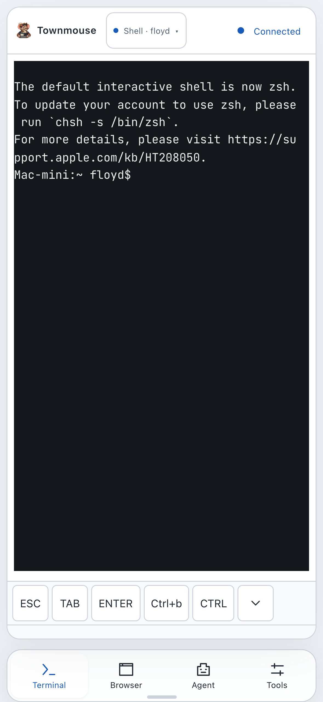
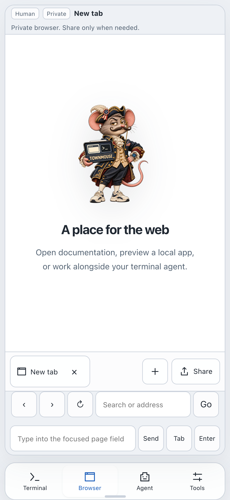
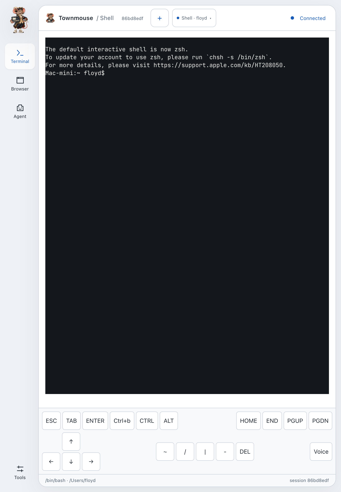
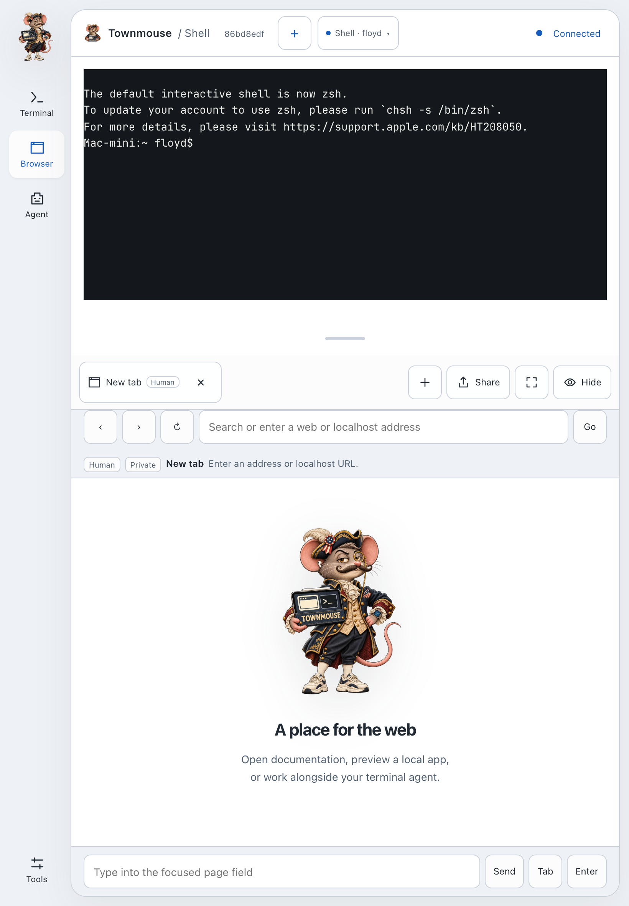
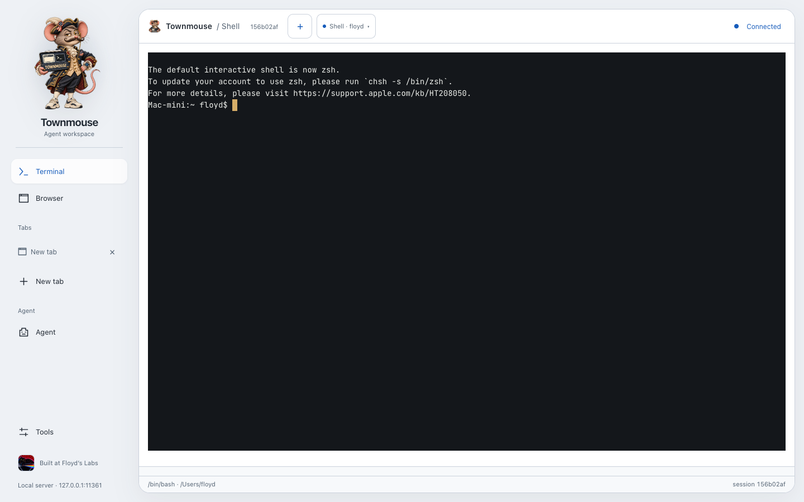
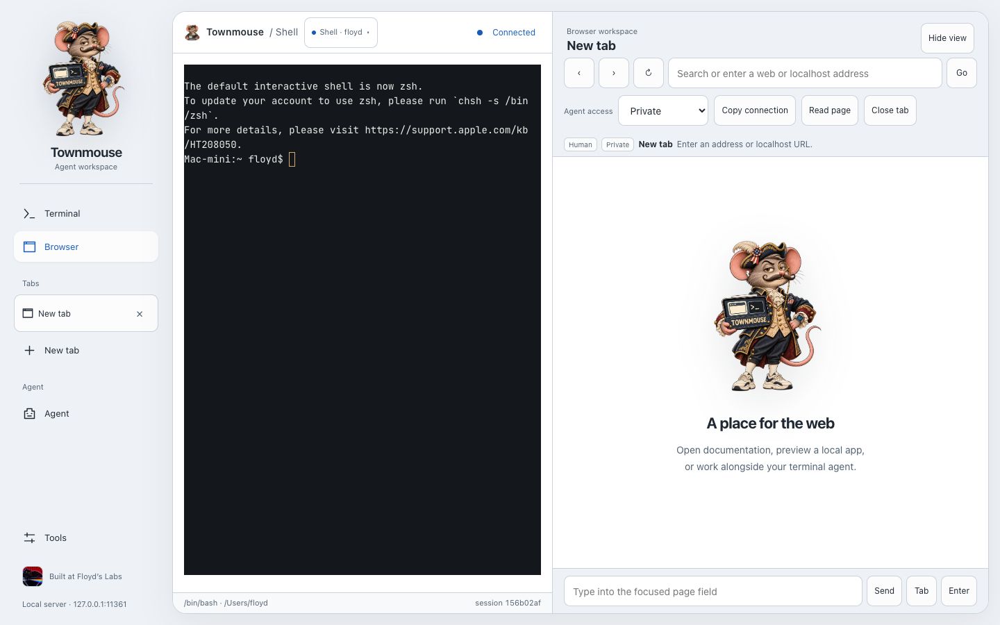

The prior mascot was replaced with the owner's two aristocrat originals. The full-figure monocled mouse is the big brand art (sidebar, browser empty state, README); the bust portrait is the small SVG icon asset (favicon, app/PWA icons). Nothing is cropped. Captured 2026-11-15.





